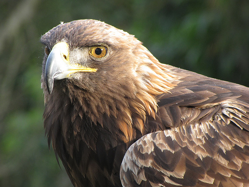
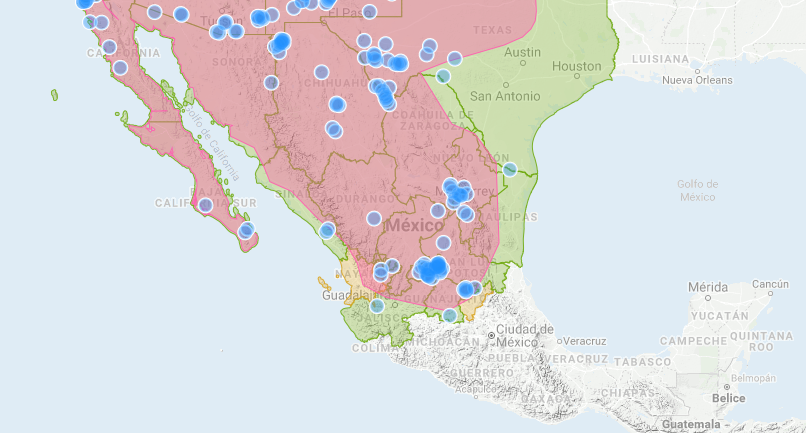
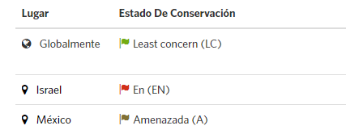

Descripción
El adulto tiene la parte ventral uniformemente obscura o un poco clara en la base de la cola. Cuando vuela se puede ver un tono dorado en la parte posterior del cuello en donde
presenta plumas lanceoladas de color castaño amarillento. El dorso es castaño oscuro con matices rojizos. Esta águila presenta la característica de tener plumas en las patas, hasta
la mitad del tarso. El pico es muy robusto y ganchudo. Los inmaduros son color café negruzco, en tonos opacos, vistos en vuelo por arriba. Vistas por abajo, tienen en la base de las
plumas primarias un blanco brillante y la cola es blanca con una ancha banda obscura terminal.
El dimorfismo se expresa en la diferencia de peso y talla, siendo las hembras hasta un 10% más grandes y pesadas (4082-5896g); que los machos -4082-5670g , las hembras tienen 10%
mayor cuerda alar y que la diferencia de peso puede llegar a ser hasta del 50%, teniendo los machos un peso aproximado de 3500 g. y las hembras de 5000 g tanto en Europa como en Norte
América. La longitud total entre 83.8 y 109.2 cm y la envergadura alar entre 198.1 a 228.6 cm.
Para México se reportan tallas para las hembras de largo total 750-1020 cm, envergadura 200 a 230 cm y de 90 cm a un metro de longitud con 215 a 232 cm de envergadura alar y un peso
de 3800 a 6600 g. Para los machos se reportan de 800 a 870 cm de longitud, 182 a 212 cm de envergadura alar y un peso de 3500 a 6000 g. Las águilas reales no tienen una dieta fija,
es decir, pueden comer todo tipo de animales que se encuentren mientras van volando. Se les considera oportunistas por este motivo, ya que pueden dar caza desde conejos, nutrias, o
cualquier otro animal que puedan agarrar con sus garras.

Hábitat
Zonas áridas, semiáridas y montañosas con bosques templados. Prefiere ambientes templados, aunque se presenta en gran proporción en zonas desérticas y en pastizales. En montañas
cercanas a valles, laderas de montañas, cañadas y praderas. Puede observarse en ambientes cerrados y abiertos, aunque en zonas áridas y semiáridas se presenta en áreas abiertas
en especial.

Situación actual

Chordata: Son un filo del reino animal caracterizado por la presencia de una cuerda dorsal o notocorda. Accipitriformes: Incluye la mayoría de las rapaces diurnas. Accipitrinae: Son una subfamilia de aves Falconiformes de la familia Accipitridae que incluye aves rapaces de tamaño mediano o pequeño.
 Aves en peligro de extinción
Aves en peligro de extinción